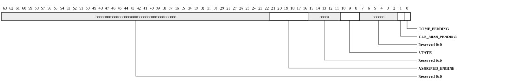
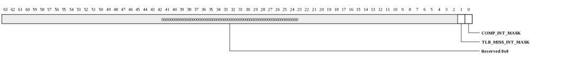
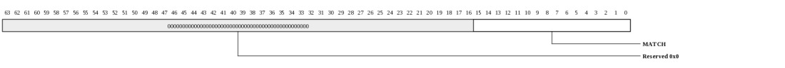
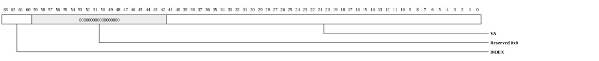
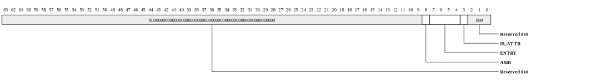
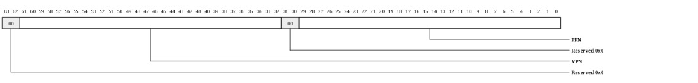

Register Summary
| Address | Register | Protection
| 0000 | MICA_COMP_CTX_SYS_CONTROL | 0008 | MICA_COMP_CTX_SYS_STATUS | 0010 | MICA_COMP_CTX_SYS_INT_MASK | 0018 | MICA_COMP_CTX_SYS_INT_MASK_SET | 0020 | MICA_COMP_CTX_SYS_INT_MASK_RESET | 0028 | MICA_COMP_CTX_SYS_PROBE_VA | 0030 | MICA_COMP_CTX_SYS_PROBE_STATUS | 0038 | MICA_COMP_CTX_SYS_MISS_VA | 0040 | MICA_COMP_CTX_SYS_COMP_INT | 0048 | MICA_COMP_CTX_SYS_TLB_MISS_INT | 0400-04ff | MICA_COMP_CTX_SYS_TLB_TABLE | 2 | 0400-04f7 | MICA_COMP_CTX_SYS_TLB_ENTRY_ADDR | 2 | 0408-04ff | MICA_COMP_CTX_SYS_TLB_ENTRY_ATTR | 2 | |
|---|
Register Definitions
Control (MICA_COMP_CTX_SYS_CONTROL: 0x0000)
This Context System register contains fields which control the operation.| Bits | Name | Type | Reset | Description
| 1 | PAUSE | RW | 0 | Allows SW to pause a Context, by writing a 1 to this bit. If it's already assigned to a processing Engine it will stay assigned and complete the operation (e.g. it will not relinquish use of the engine, as it will with Reset bit) and will be cleared by HW when the operation completes. If it's not yet assigned it will not be assigned. | 0 | RESET | RW | 0 | Stop the operation. If the Context is already assigned to a processing Engine, proceed to a stopping point (e.g. all memory operations in flight are complete) and terminate it. If it has not yet been assigned to a processing Engine, do not assign it to one. After writing this bit to 1, SW can read the Status register State field to determine when the operation is fully terminated. This bit is cleared by HW when the operation completes. | |
|---|
Status (MICA_COMP_CTX_SYS_STATUS: 0x0008)
This Context System register contains the status of the Context.
| Bits | Name | Type | Reset | Description
| 21:16 | ASSIGNED_ENGINE | RO | 0 | Indicates which Engine is assigned to this Context. Only valid if STATE is RUN or RESET_WAIT. | 10:8 | STATE | RO | 0 | The state that the Context is in. |
1 | TLB_MISS_PENDING | W1TC | 0 | TLB Miss interrupt is pending. The interrupt will be sent if TLB Miss Interrupt Mask bit is 0. This bit is cleared by writing a 1 to it, if a TLB entry for this Context is added with the TLB_MISS_ACK bit set, or if the Opcode Register is written. | 0 | COMP_PENDING | W1TC | 0 | Completion interrupt is pending. The interrupt will be sent if Completion Interrupt Mask bit is 0. This bit is cleared by writing a 1 to it, or if the Opcode Register is written. This bit can also be read in the Context User In_Use Register, which can be used to poll for completion. | |
|---|
Interrupt Mask (MICA_COMP_CTX_SYS_INT_MASK: 0x0010)
This Context System register contains Interrupt Mask bits.
| Bits | Name | Type | Reset | Description
| 1 | TLB_MISS_INT_MASK | RW | 0 | Masks TLB Miss interrupt. | 0 | COMP_INT_MASK | RW | 0 | Masks Completion interrupt. | |
|---|
Interrupt Mask Set (MICA_COMP_CTX_SYS_INT_MASK_SET: 0x0018)
This Context System register is used to set Interrupt Mask bits. Writing a value of 1 to a bit position sets the interrupt mask for that bit. Writing a value of 0 to a bit position has no effect.
| Bits | Name | Type | Reset | Description
| 1 | TLB_MISS_INT_MASK | RW | 0 | Masks TLB Miss interrupt. | 0 | COMP_INT_MASK | RW | 0 | Masks Completion interrupt. | |
|---|
Interrupt Mask Reset (MICA_COMP_CTX_SYS_INT_MASK_RESET: 0x0020)
This Context System register is used to clear Interrupt Mask bits. Writing a value of 1 to a bit position clears the interrupt mask for that bit. Writing a value of 0 to a bit position has no effect.
| Bits | Name | Type | Reset | Description
| 1 | TLB_MISS_INT_MASK | RW | 0 | Masks TLB Miss interrupt. | 0 | COMP_INT_MASK | RW | 0 | Masks Completion interrupt. | |
|---|
Probe Virtual Address (MICA_COMP_CTX_SYS_PROBE_VA: 0x0028)
This Context System register is used for probing the TLB| Bits | Name | Type | Reset | Description
| 41:12 | VA | WO | 0 | Writing to this field initiates a TLB probe, and the result status is put into the Probe Status Register. | |
|---|
Probe Status (MICA_COMP_CTX_SYS_PROBE_STATUS: 0x0030)
This Context System register provides the status of a TLB probe.
| Bits | Name | Type | Reset | Description
| 15:0 | MATCH | RW | 0 | A value of '1' indicates that the associated entry matched the PROBE_VA in TLB. | |
|---|
MISS Virtual Address (MICA_COMP_CTX_SYS_MISS_VA: 0x0038)
This Context System register provides the Virtual Address that was not found in TLB.
| Bits | Name | Type | Reset | Description
| 63:60 | INDEX | RW | 0 | Suggestion of which TLB entry to fill. Software can either use this suggestion or ignore it and choose the entry it fills by other means. | 41:0 | VA | RW | 0 | Virtual Address that was not found in TLB, loaded in after the lookup misses. | |
|---|
Completion Interrupt Binding (MICA_COMP_CTX_SYS_COMP_INT: 0x0040)
This Context System register contains the interrupt binding for normal completion interrupts.
| Bits | Name | Type | Reset | Description
| 21:18 | X_COORD | RW | 0 | Tile X Coordinate | 10:7 | Y_COORD | RW | 0 | Tile Y Coordinate | 6:5 | INT_NUM | RW | 0 | Interrupt Number | 4:0 | EVENT_NUM | RW | 0 | Event Number | |
|---|
TLB Miss Interrupt Binding (MICA_COMP_CTX_SYS_TLB_MISS_INT: 0x0048)
This Context System register contains the interrupt binding for TLB Miss interrupts.
| Bits | Name | Type | Reset | Description
| 21:18 | X_COORD | RW | 0 | Tile X Coordinate | 10:7 | Y_COORD | RW | 0 | Tile Y Coordinate | 6:5 | INT_NUM | RW | 0 | Interrupt Number | 4:0 | EVENT_NUM | RW | 0 | Event Number | |
|---|
TLB Table (MICA_COMP_CTX_SYS_TLB_TABLE: 0x0400-0x04ff)
TLB table. This table consists of 16 TLB entries. Each entry is two registers: TLB_ENTRY_ADDR and TLB_ENTRY_ATTR. This register definition is a description of the address as opposed to the registers themselves.This register is protected at level 2

| Bits | Name | Type | Reset | Description
| 8 | ASID | RW | 0 | Address space identifier (IOTLB number). | 7:4 | ENTRY | RW | 0 | Selects which TLB entry is accessed. | 3 | IS_ATTR | RW | 0 | Selects TLB_ENTRY_ADDR vs TLB_ENTRY_ATTR. | |
|---|
TLB Entry VPN and PFN Data (MICA_COMP_CTX_SYS_TLB_ENTRY_ADDR: 0x0400-0x04f7 stride: 16)
Read/Write data for the TLB entry's VPN and PFN. When written, the associated entry's VLD bit will be cleared.This register is protected at level 2

| Bits | Name | Type | Reset | Description
| 61:32 | VPN | RW | 0 | Virtual Page Number | 29:0 | PFN | RW | 0 | Physical Frame Number | |
|---|
TLB Entry Attributes (MICA_COMP_CTX_SYS_TLB_ENTRY_ATTR: 0x0408-0x04ff stride: 16)
Read/Write data for the TLB entry's ATTR bits. When written, the TLB entry will be updated. TLB_ENTRY_ADDR must always be written before this register. Writing to this register without first writing the TLB_ENTRY_ADDR register causes unpredictable behavior including memory corruption.This register is protected at level 2

| Bits | Name | Type | Reset | Description
| 51:48 | LRU | RO | 0 | On reads, provides the LRU pointer for the associated ASID. Ignored on writes. | 40:37 | LOC_X_OR_MASK | RW | 0 | X-coordinate of home Tile when page is explicitly homed (HOME_MAPPING = 1). AMT mask when HOME_MAPPING = 0. | 29:26 | LOC_Y_OR_OFFSET | RW | 0 | Y-coordinate of home Tile when page is explicitly homed (HOME_MAPPING = 1). AMT offset when HOME_MAPPING = 0. | 24 | NT_HINT | RW | 0 | NonTemporal Hint. Device services may use this hint as a performance optimization to inform the Tile memory system that the associated data is unlikely to be accessed within a relatively short period of time. Read interfaces may use this hint to invalidate cache data after reading. | 23 | PIN | RW | 0 | When asserted, only the IO pinned ways in the home cache will be used. This attribute only applies to writes. | 20 | HOME_MAPPING | RW | 1 | When 0, physical addresses are hashed to find the home Tile. When 1, an explicit home is stored in LOC_X,LOC_Y. | 7:3 | PS | RW | 1eh | Page size. Size is 2^(PS+12) so 0=4 kB, 1=8 kB, 2=16 kB ... 30=4096 GB. The max supported page size is 30. | 0 | VLD | RW | HW | Entry valid bit. Resets to 1 for the first entry in each ASID. Resets to 0 for all other entries. Clears whenever the associated entry's TLB_ENTRY_ADDR register is written. | |
|---|
Copyright © 2014 Tilera® Corporation. All rights reserved. Printed in the United States of America.
No part of this book may be reproduced, stored in a retrieval system, or transmitted in any form or by any means, electronic, mechanical, photocopying, recording, or otherwise, except as may be expressly permitted by the applicable copyright statutes or in writing by the Publisher.
The following are registered trademarks of Tilera Corporation: Tilera and the Tilera logo. The following are trademarks of Tilera Corporation: Embedding Multicore, The Multicore Company, Tile Processor, TILE Architecture, TILE64, TILEPro, TILEPro36, TILEPro64, TILExpress, TILExpress-64, TILExpressPro-64, TILExpress-20G, TILExpressPro-20G, TILExpressPro-22G, iMesh, TileDirect, TILEmpower, TILEmpower-Gx, TILEncore, TILEncorePro, TILEncore-Gx, TILE-Gx, TILE-Gx16, TILE-Gx36, TILE-Gx64, TILE-Gx100, TILE-Gx3000, TILE-Gx5000, TILE-Gx8000, DDC (Dynamic Distributed Cache), Multicore Development Environment, Gentle Slope Programming, iLib, TMC (Tilera Multicore Components), hardwall, Zero Overhead Linux (ZOL), MiCA (Multicore iMesh Coprocessing Accelerator), and mPIPE (multicore Programmable Intelligent Packet Engine). All other trademarks and/or registered trademarks are the property of their respective owners.
Third-party software: The Tilera IDE makes use of the BeanShell scripting library. Source code for the BeanShell library can be found at the BeanShell website (http://www.beanshell.org/developer.html).
The following is a trademark of Marvell Semiconductor, Inc.: Distributed Switching Architecture (DSA).
This document contains advance information on Tilera products that are in development, sampling or initial production phases. This information and specifications contained herein are subject to change without notice at the discretion of Tilera Corporation.
No license, express or implied by estoppels or otherwise, to any intellectual property is granted by this document. Tilera disclaims any express or implied warranty relating to the sale and/or use of Tilera products, including liability or warranties relating to fitness for a particular purpose, merchantability or infringement of any patent, copyright or other intellectual property right.
Products described in this document are NOT intended for use in medical, life support, or other hazardous uses where malfunction could result in death or bodily injury.
THE INFORMATION CONTAINED IN THIS DOCUMENT IS PROVIDED ON AN "AS IS" BASIS. Tilera assumes no liability for damages arising directly or indirectly from any use of the information contained in this document.